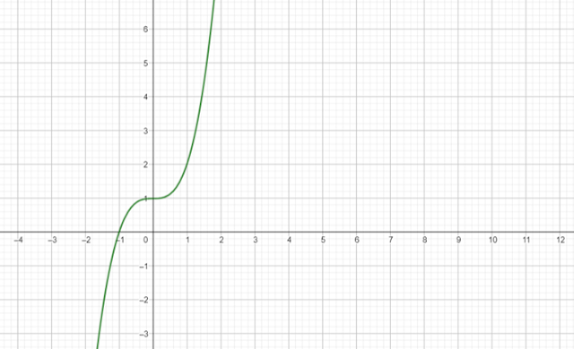

Problema 31
Definición. \( \lim\limits_{x \to \infty} f(x)=\infty \Longleftrightarrow \forall M>0, \exists N>0: \forall x>N, f(x)>M \).
En efecto, para cualquier número \(M\) (por grande que sea), es posible encontrar un número \(N\) positivo tal que para todo \(x >N\), \(1+x^3>M\).
Entendemos mejor lo anterior observando la gráfica de \(f\):
Para encontrar un \(N>0\) tal que \(f(x)>M\) debemos alejarnos infinitamente hacia la derecha del eje X.